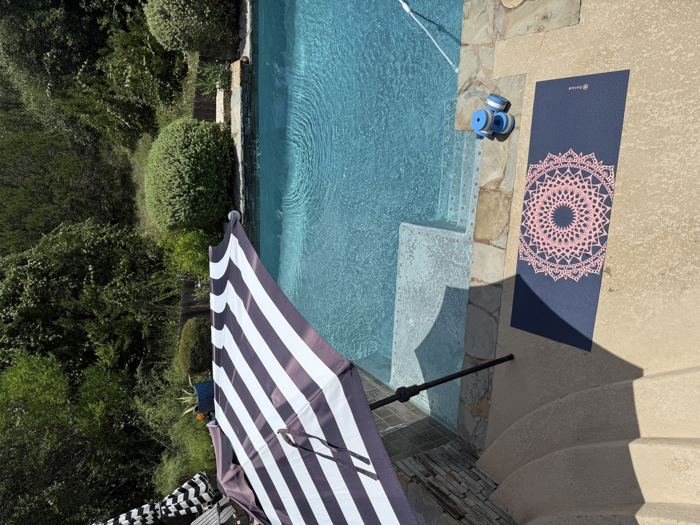
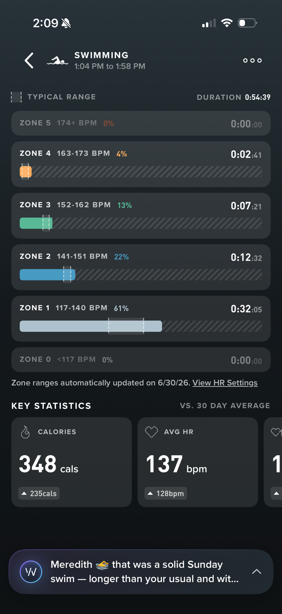
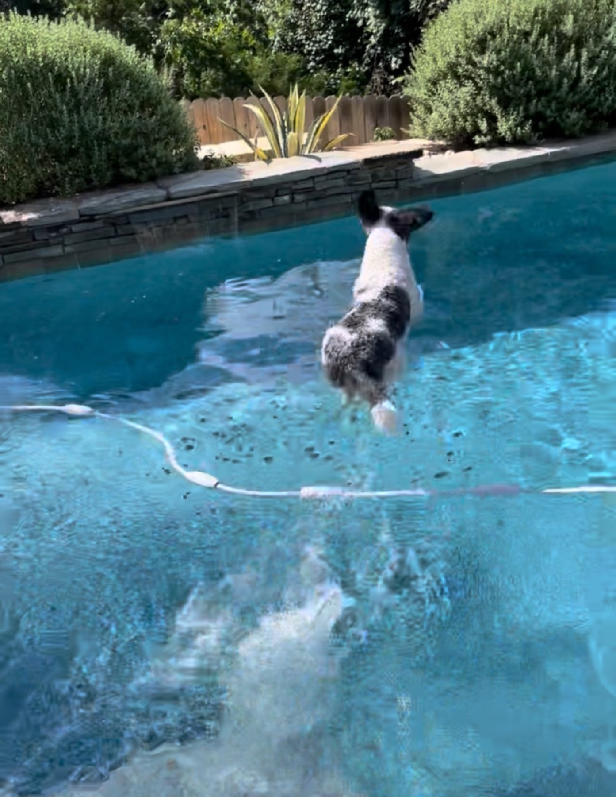
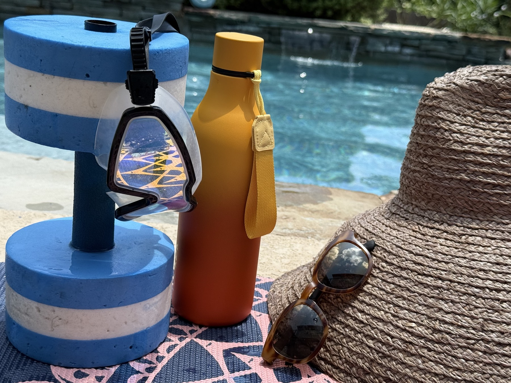
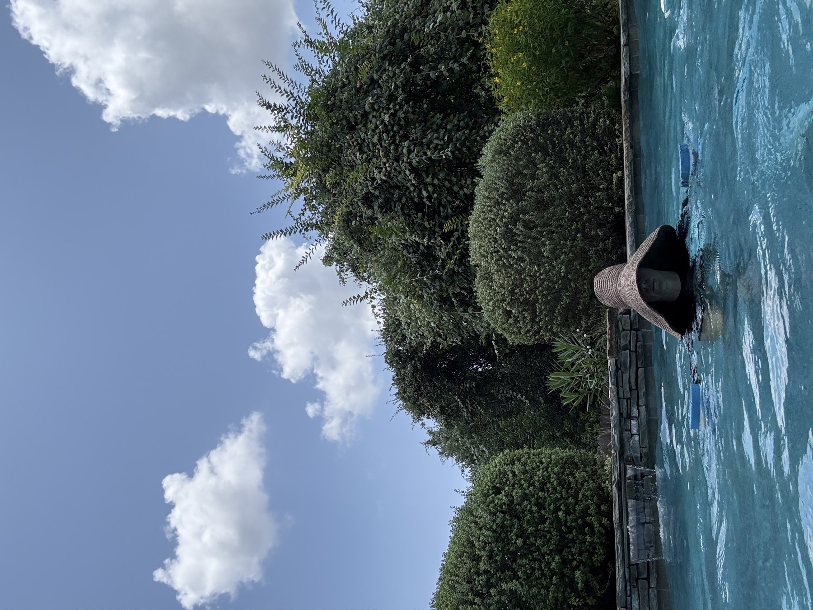
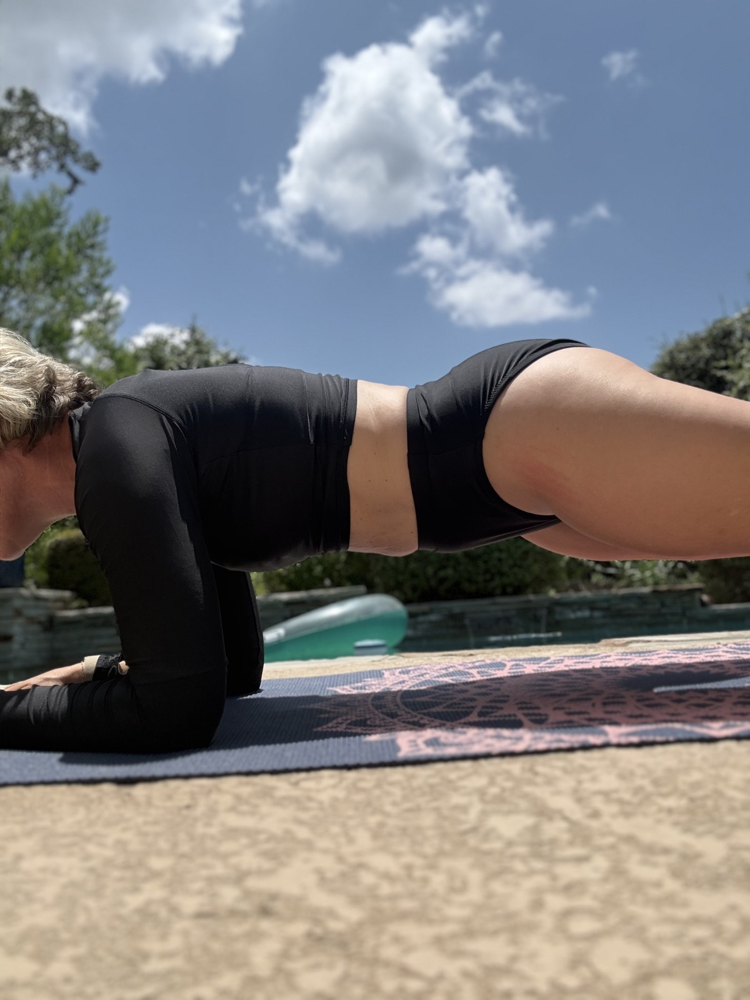
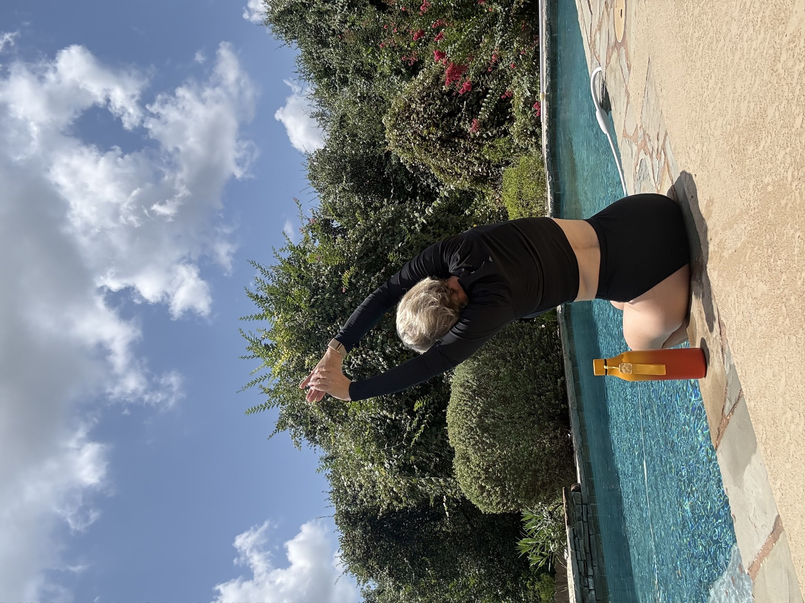
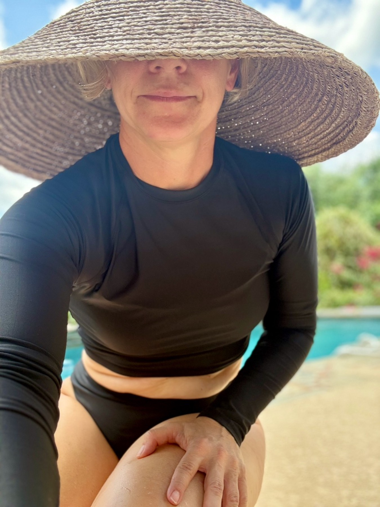
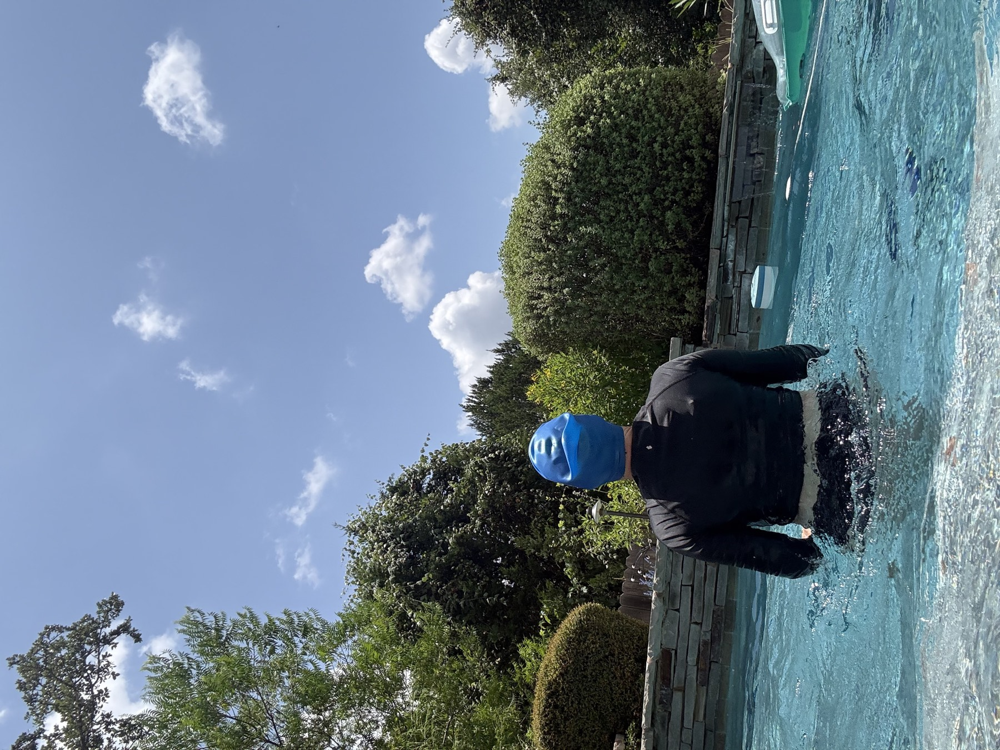

I grew up in small-town Georgia without a swimming pool, which means I spent a good chunk of my childhood dreaming about one. The floaty. The cannonballs. The general glamour of having a pool, which as a kid seemed roughly equivalent to owning a small water park.
Fast forward a few decades and I have the pool. What I do not have — if I'm being honest — is a pool that gets used. My two older kids have aged out of the splash-all-day phase, and my youngest has never been much of a swimmer thanks to some early ear issues. So most summer afternoons my beautiful, shimmering, chlorinated childhood dream just... sits there. Sparkling. Judging me a little.
It genuinely hurts my soul to watch it go unused. But I'll admit the other thing keeping me out of it: splashing around by myself as a grown woman felt a touch silly. Like I needed a reason to be in there.
So I gave myself one.
The experiment
I consider myself reasonably fit — I lift a few days a week and I'm a little obsessed with my WHOOP — and I'd been looking for something to do on my slower recovery days between strength sessions. Then I remembered how worked I felt swimming on vacation, and it clicked: the pool could be my recovery-day gym. Water gives you resistance in every single direction and cushions every landing, so you can push hard with almost none of the joint cost.
I built out a proper 45-minute routine, strapped on the WHOOP, and went to work.
Reader, I burned 348 calories in 55 minutes, with an activity strain of 11.4 — right up there with a hard Peloton ride. It was low-impact, it was weirdly pleasant, and I climbed out feeling like I'd actually done something — plus the deep satisfaction of finally, finally using the pool. Ten-year-old me would be thrilled.

Two quick confessions before you try this
Deal with your pool vacuum first. I spent a genuinely embarrassing amount of my warm-up doing hand-to-hand combat with mine. Make sure it's done running — or just unplug it — before you get in.
Secure your enthusiastic dog. I had to lock mine inside, because his one true joy in life is launching himself at me the moment I'm in the water. He was rewarded handsomely at the end, and held no grudge. (Exhibit A below.)

The workout
Here's exactly what I did. It's a real training session, not gentle water aerobics — the point is to keep rest short and move briskly between blocks, because that's what drives the burn. Water dumbbells make a big difference, so grab a set if you can.

A quick note on when to do it: this is great on a non-lifting day or as active recovery. It's complementary conditioning — it torches calories and builds work capacity, but the actual muscle-shaping still comes from your strength days, since water resistance can't be loaded up the way real weights can. Think of it as the fun cross-training, not the main event.
Block 1 — Warm-Up (~8 min)
Don't skip this. It wakes up your shoulders and hips for the harder stuff.
| Exercise | Work | How |
|---|---|---|
| Water jog, easy | 3 min | Chest-deep, drive the knees, pump the arms. Build gradually. |
| Leg swings + arm circles | 2 min | Hold the edge. Front-to-back and side-to-side swings, big arm circles. |
| Easy freestyle or breaststroke | 3 min | Smooth laps to warm up and loosen the shoulders. |
Block 2 — Cardio Intervals (~12 min)
Your highest-burn block. Truly sprint the hard intervals — the water makes it safe to go all out.
| Exercise | Work | How |
|---|---|---|
| Pool sprint (swim) | ~4 min | 4 lengths freestyle, then 4 breaststroke, alternating. Push the pace the whole way. |
| Tuck jumps (shallow end) | ~3.5 min | Sets of 15 — explode up, knees to chest, soft landing — with 20s rest between. Don't underestimate this one. |
| Tread-water surges | 4 × 30s | Tread hard with your arms up out of the water 10s, easy 20s. The sleeper of the whole workout — genuinely brutal. |

Block 3 — Water Dumbbell Resistance (~12 min)
Push the drag in both directions — there's no "easy" phase like there is with free weights, so control your speed to keep the tension high. Minimal rest.
| Exercise | Work | How |
|---|---|---|
| DB chest press / fly | 3 × 15 | Submerged. Press together in front, open wide. Push the drag both ways. |
| DB lat push-down | 3 × 15 | Push dumbbells from surface down to your hips. Slow on the way up — that's the work. |
| DB front raise / push-back | 3 × 15 | Raise to the surface, push back down and behind. Constant tension. |
| Cross-country ski + DB swing | 3 × 30s | Scissor legs front/back, swing dumbbells opposite. Big range, fast. |
| Standing row (drag) | 3 × 15 | Hinge slightly, pull the dumbbells back like a row, slow return. |
Block 4 — Lower Body Power (~8 min)
The showstopper: explosive work your joints normally couldn't handle on land. Go for real height and distance.
| Exercise | Work | How |
|---|---|---|
| Squat jumps | 3 × 12 | Full squat underwater, explode up. The water cushions the landing — go hard. |
| Scissor / split jumps | 3 × 10/leg | Lunge-jump switching legs. Power, zero impact. |
| Lateral bounds | 3 × 10/side | Push off one leg, bound sideways, stick the landing. Glutes and outer hips. |
| Wall tuck-ups | 3 × 12 | Back to the wall, arms on the edge, tuck both knees to chest and extend. |
Block 5 — Core (~5 min)
You can do core in the water — treading twists and suspended knee tucks make your core stabilize the whole time — but I'll be honest: I hauled myself out and did mine poolside on a mat. Planks and a few knee tucks on dry land just felt better for me, and the view didn't change. That's the real lesson of this whole thing: experiment, and keep whatever actually works for you.
| Exercise | Work | How |
|---|---|---|
| Plank (poolside) | 3 × 30–45s | On a mat, forearms down, body in one line. Squeeze everything. My personal pick. |
| Treading Russian twist | 3 × 30s | (In water) Tread with legs only, hold a DB at your chest, rotate side to side. |
| Flutter kicks on wall | 3 × 30s | (In water) Hold the edge, body horizontal, fast little kicks. |
| Pike / knee tuck | 3 × 12 | Suspended in deep water, or on the mat poolside. Tuck the knees up, extend. |

Cooldown: 3–5 minutes of easy freestyle or backstroke, then float and stretch your shoulders, hips, and hamstrings while the water keeps you loose.

Want it harder? Shorten your rest, add a second round of the resistance or power block, or wear webbed gloves for more drag. Want it easier? Drop the power block, stretch out the easy intervals, and call it a recovery swim. No judgment either way — you're in the pool, which is the whole point.
Fold it into what you're already doing
The best part is that this doesn't have to replace anything. Slot it in on a recovery day alongside whatever's already working for you — and if you'd rather have a pro in your corner the rest of the week, we're spoiled for options right here in Steiner.
Want a workout program designed around your personal goals? Start with a trainer:
- Train with Audrey — personalized programs from a certified trainer with 30 years of experience.
- Sumi Singh – Shaila Fitness — personal trainer, online coach, and author covering strength, nutrition, and prenatal work for every age and stage.
Prefer a gym with classes and equipment? These local spots have you covered:
- Wild Basin Fitness at Steiner — our locally owned, full-service gym with personal training and 100+ classes a month.
- MaxStrength Fitness — expertly guided strength sessions in 20 minutes, twice a week, for the time-crunched among us.
- Infinite Fitness — small-group and one-on-one personal training, big on smart programming and injury prevention.
And to fuel and recover from all of it, A Health and Wellness Shop stocks clean nutrition, quality supplements, and wellness essentials right here in the neighborhood.
Mix and match. Lift with a trainer, take a class, and use the pool for the in-between days. Your joints will thank you and your backyard will finally earn its keep.
Your turn
If you've got a pool quietly sparkling out back, consider this your permission slip to go use it — vacuum off, dog secured, no reason required beyond "I felt like it." I'd love to hear how it goes. Come tell me on The Porch.
No pool of your own? Steiner residents have several to choose from — the heated lap pool and family pool at Bella Mar, the lap pool at John Simpson, and the family pool at Towne Square. Check current hours on the Steiner Ranch Master Association pools page.

One last thing, especially if you've got highlights or color-treated hair: protect it with a swim cap. Chlorine is rough on color, and a cap saves you the fading — and a few touch-up appointments.

General fitness guidance, not medical advice. Never swim alone for hard intervals if you can help it, and stop if you ever feel lightheaded.